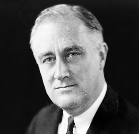
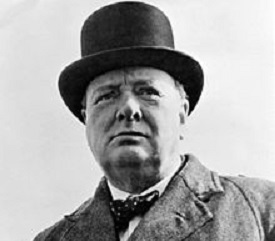
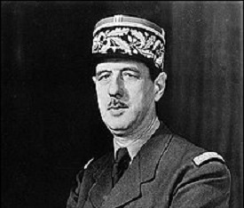

Aliații din al Doilea Război Mondial reprezintă grupul de țări care s-au opus Puterilor Axei în timpul celei de-a doua conflagrații mondiale.Pe 1 septembrie 1939, invazia germană a Poloniei a declanșat al Doilea Război Mondial. Franța, Marea Britanie, Australia și Noua Zeelandă au declarat război Germaniei pe 3 septembrie. La scurtă vreme după aceasta, Nepal, Newfoundland, Tonga, Africa de Sud și Canada au urmat exemplul englezilor și au declarat la rândul lor război Germaniei. Pe 17 septembrie, Uniunea Sovietică a invadat Polonia din est. În anul următor, Uniunea Sovietică a anexat statele baltice, (Estonia, Letonia și Lituania) și părți din România (Basarabia și Bucovina de Nord) și a atacat Finlanda în ceea ce avea să fie numit războiul de iarnă. Acordul germano-sovietic a fost încălcat de către naziști, care au atacat URSS-ul în cadrul Operațiunii Barbarossa pe 22 iunie 1941.
Statele Unite ale Americii s-au alăturat Aliaților după atacul de la Pearl Harbor, de pe 7 decembrie 1941. Declarația Națiunilor Unite de pe 1 ianuarie 1942 a unit în mod oficial 26 de națiuni într-o alianță antifascistă. Declarația aceasta a format de asemenea baza pentru formarea Organizația Națiunilor Unite. Alianța neoficială a celor 4 Mari formată din Uniunea Sovietică, Regatul Unit al Marii Britanii și Irlandei de Nord, Statele Unite ale Americii si China a devenit tot mai strânsă până la începutul celei de-a doua jumătăți a războiului, iar deciziile celor trei au hotărât în cele din urmă strategia Aliaților în timpul războiului pe tot globul.
- S.U.A.
- Marea Britanie
- Franta
La început efectiv neutru în timpul celui de-al doilea război mondial, în timp ce Germania a cucerit o mare parte din Europa continentală, Statele Unite au început să furnizeze material aliaților în martie 1941 prin programul Lend-Lease. La 7 decembrie 1941, Imperiul Japoniei a lansat un atac surpriză asupra Pearl Harbor, determinând Statele Unite să se alăture aliaților împotriva puterilor Axei. În timpul războiului, Statele Unite au fost numite printre "patru polițiști" ai puterii aliaților care s-au întâlnit pentru a planifica lumea postbelică împreună cu Marea Britanie, Uniunea Sovietică și China. Deși națiunea a pierdut mai mult de 400.000 de soldați, a apărut relativ nedepășită din război cu o influență economică și militară și mai mare .
Statele Unite au jucat un rol principal în conferințele de la Bretton Woods și Yalta cu Regatul Unit, Uniunea Sovietică și alți aliați, care au semnat acorduri privind noile instituții financiare internaționale și reorganizarea Europei după război. Pe măsură ce victoria aliaților a fost câștigată în Europa, o conferință internațională din 1945, organizată la San Francisco, a produs Carta Națiunilor Unite, care a devenit activă după război. Statele Unite au dezvoltat primele arme nucleare și le-au folosit în Japonia în orașele Hiroshima și Nagasaki; cauzând japonezilor să se predea pe 2 septembrie, terminând al doilea război mondial. Parade și sărbători care au urmat în ceea ce se numește Ziua Victoriei sau Ziua V-J
Regatul Unit a intrat în al Doilea Război Mondial, declarând război Germaniei Naziste în 1939, după ce aceasta din urmă a invadat Polonia. Winston Churchill a devenit prim-ministru și șef al unui guvern de coaliție în 1940. În ciuda înfrângerii aliaților săi europeni în primul an de război, Regatul Unit și Imperiul său a continuat lupta singure împotriva Germaniei. În 1940, RAF a învins Luftwaffe german într-o luptă pentru controlul cerului în bătălia Angliei. Zonele urbane au suferit de pe urma bombardamentelor din timpul războiului. Au fost și victoriile greu obținute bătălia Atlanticului, și în campaniile din Africa de Nord și Birmania(d). Forțele britanice au jucat un rol important în debarcarea din Normandia din 1944, realizată împreună cu aliatul Statele Unite ale Americii.
După opt luni fără lupte („Războiul ciudat”), Wehrmachtul a invadat, la 10 mai 1940, nord-estul Franței, iar mareșalul Philippe Pétain a cerut, la 22 iunie, armistițiul . Acesta din urmă a cerut și a obținut, la 10 iulie, puteri depline, lichidând, astfel, cea de a Treia Republică și punând bazele regimului de la Vichy, care a dus o politică conservatoare, tradiționalistă și antisemită, în colaborare cu Germania Nazistă și în ciuda acțiunilor rezistenței din interiorul și din exteriorul țării. Debarcarea Aliaților, la 6 iunie 1944, în Normandia a anunțat sfârșitul ocupației naziste și începutul eliberării Europei. În total, conflictul a dus la moartea a mai puțini militari ca cel anterior, dar victimele civile au fost numeroase – cel puțin 330.000 de victime civile dintre care 75.000 de evrei de pe teritoriul francez au fost uciși în Holocaust – iar rănile psihologice și politice (cauzate de dezastrul din 1940, de colaboraționism și, apoi, de reglările de conturi din cadrul epurărilor) s-au cicatrizat după perioade foarte îndelungate.

- Marea Britanie
- Franta
- SUA - din 1941
- Canada
- Australia
- Noua Zeelanda
- India
- China
- Africa de Sud
- Filipine


